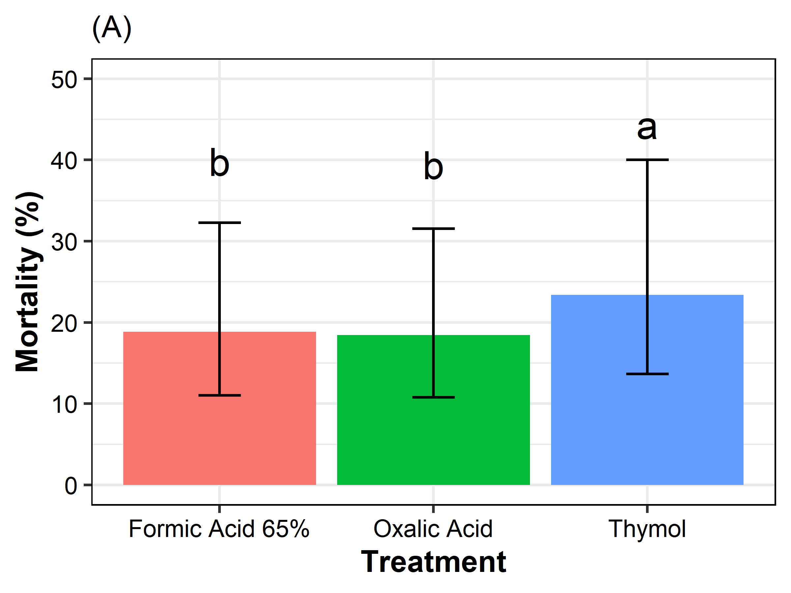
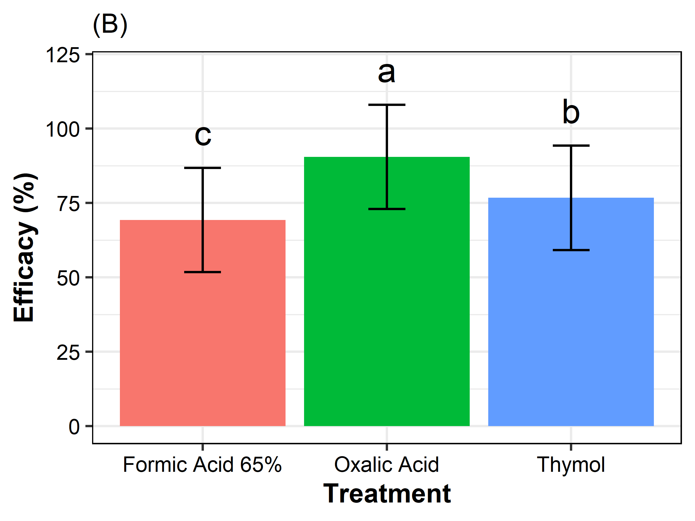
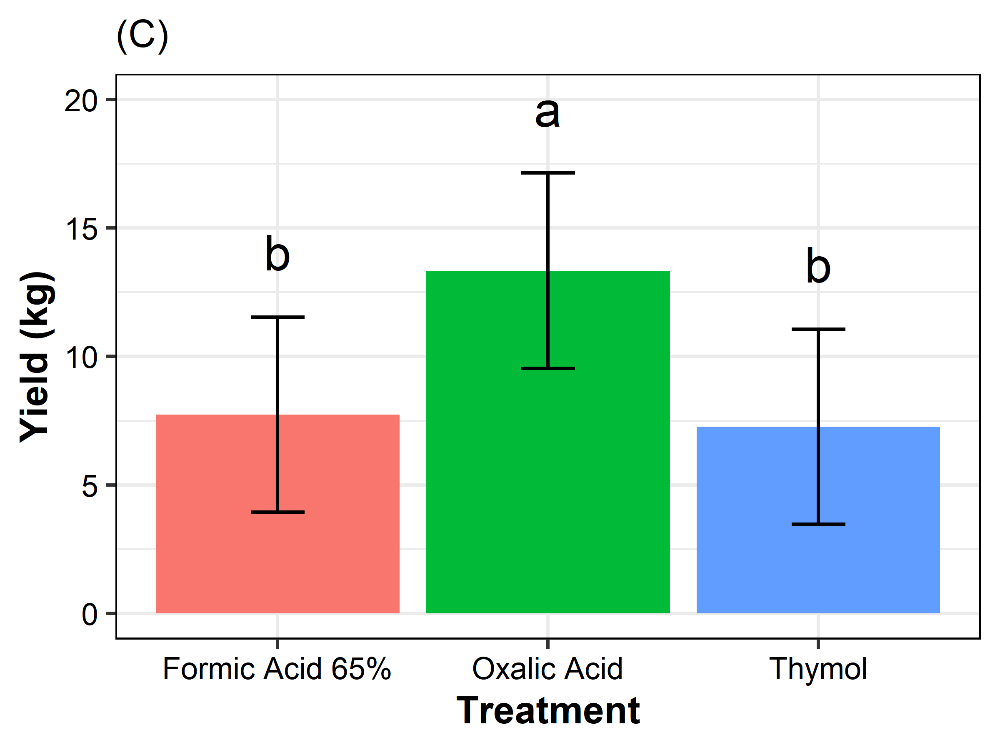
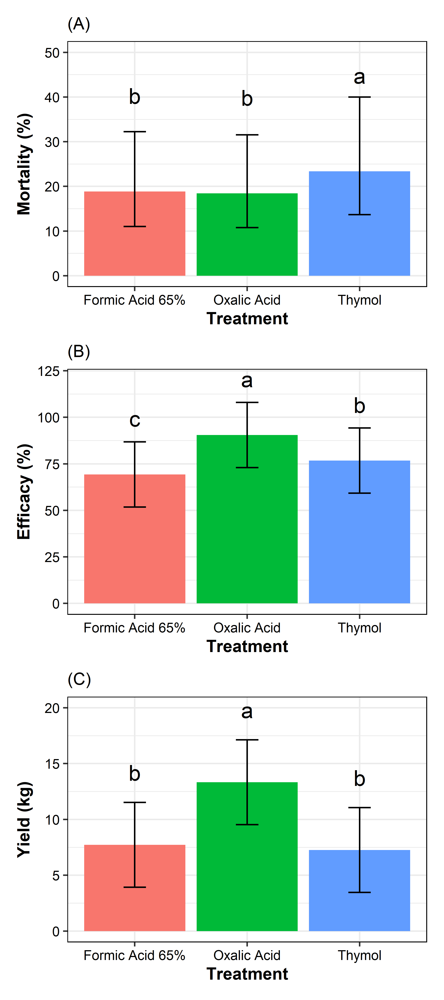
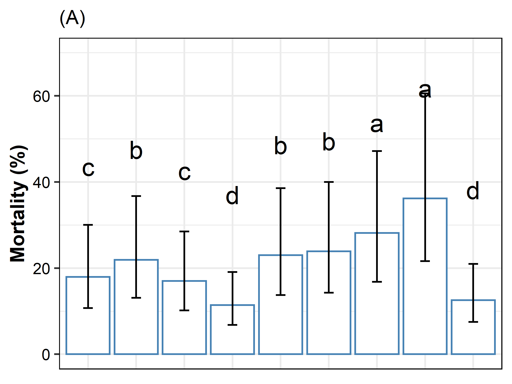
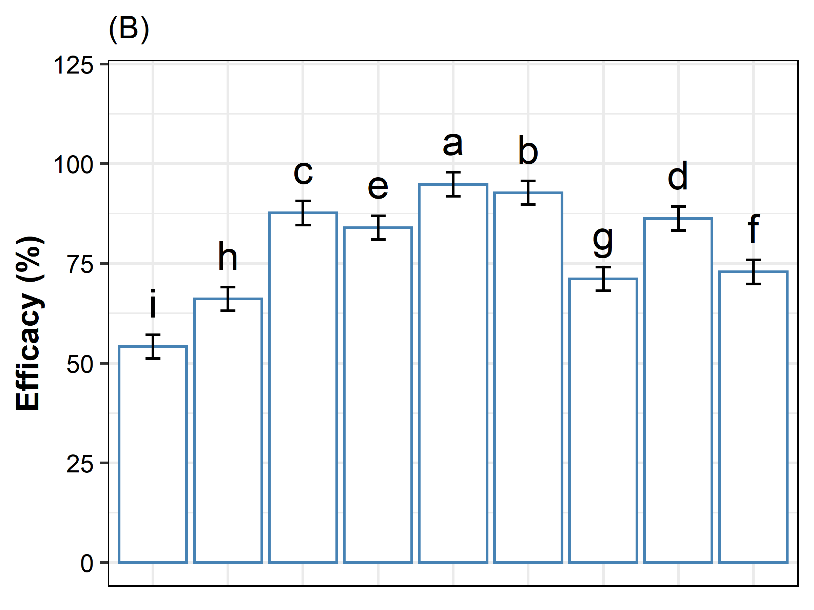
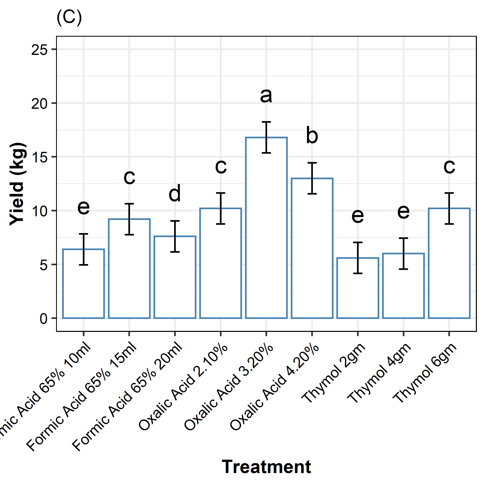
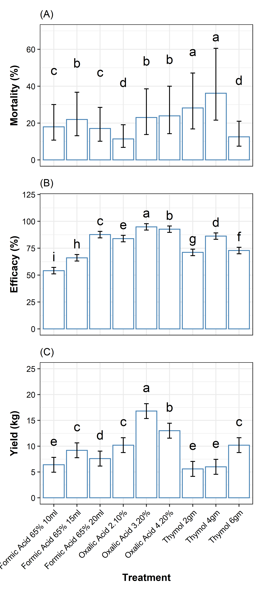

# Mites data
mites <- read_csv("data/mites.csv")
# Yield and Efficacy data
efficacy <- read_excel("data/efficacy.xlsx")library(emmeans)
library(multcomp)
# Model
lme <- lmer(log(value) ~ Treatment + (1|Rep) + (1|Conc.) + (1|Week), data=mites)
means <- emmeans(lme, pairwise ~ Treatment)Scott-Knott
library(ScottKnott)
skm <- with(mites,
SK(x= Treatment,
y=log(value),
model='y ~ x',
which='x'))
skm <- summary(skm)## Levels Means SK(5%)
## Thymol 3.151771 a
## Formic Acid 65% 2.936846 b
## Oxalic Acid 2.914691 bBar chart
p1 <- cld(means$emmeans) %>%
data.frame() %>%
mutate(emmean = exp(emmean), SE = exp(SE), lower.CL = exp(lower.CL), upper.CL = exp(upper.CL)) %>%
left_join(skm, by = c("Treatment" = "Levels")) %>%
ggplot(aes(x = Treatment, y = emmean, fill = Treatment)) +
geom_bar(stat = "identity", position=position_dodge()) +
geom_errorbar(aes(ymin = lower.CL, ymax = upper.CL, width=.2)) +
geom_text(aes(label = `SK(5%)`, y = emmean + 0.05), size = 5, position = position_dodge(0.9), vjust = -5.5) +
ylim(0, 50) +
labs(x = "Treatment", y = "Mortality (%)", subtitle = "(A)") +
theme_bw() +
theme(legend.position = "none",
axis.text.x = element_text(colour = "black"),
axis.text.y = element_text(colour = "black"),
axis.title.x = element_text(face = "bold"),
axis.title.y = element_text(face = "bold"),
panel.border = element_rect(color="black"),
strip.background = element_rect(color = "black")
)
p1
# Model
lme <- lmer(Efficacy ~ Treatment + (1|Replication) + (1|Conc.), data = efficacy)
means <- emmeans(lme, pairwise ~ Treatment)Scott-Knott
ske <- with(efficacy,
SK(x= Treatment,
y=Efficacy,
model='y ~ x',
which='x'))
ske <- summary(ske)## Levels Means SK(5%)
## Oxalic Acid 90.48645 a
## Thymol 76.74475 b
## Formic Acid 65% 69.29151 cBar chart
p2 <- cld(means$emmeans) %>%
data.frame() %>%
left_join(ske, by = c("Treatment" = "Levels")) %>%
ggplot(aes(x = Treatment, y = emmean, fill = Treatment)) +
geom_bar(stat = "identity", position=position_dodge()) +
geom_errorbar(aes(ymin = lower.CL, ymax = upper.CL, width=.2)) +
geom_text(aes(label = `SK(5%)`, y = emmean + 0.05), size = 5, position = position_dodge(0.9), vjust = -3) +
ylim(0, 120) +
labs(x = "Treatment", y = "Efficacy (%)", subtitle = "(B)") +
theme_bw() +
theme(legend.position = "none",
axis.text.x = element_text(colour = "black"),
axis.text.y = element_text(colour = "black"),
axis.title.x = element_text(face = "bold"),
axis.title.y = element_text(face = "bold"),
panel.border = element_rect(color="black"),
strip.background = element_rect(color = "black")
)
p2
# Model
lme <- lmer(Honey_Yield ~ Treatment + (1|Replication) + (1|Conc.), data = efficacy)
means <- emmeans(lme, pairwise ~ Treatment)Multiple comparison
Scott-Knott
sky <- with(efficacy,
SK(x= Treatment,
y=Honey_Yield,
model='y ~ x',
which='x'))
sky <- summary(sky)## Levels Means SK(5%)
## Oxalic Acid 13.333333 a
## Formic Acid 65% 7.733333 b
## Thymol 7.266667 bBar chart
p3 <- cld(means$emmeans) %>%
data.frame() %>%
left_join(sky, by = c("Treatment" = "Levels")) %>%
ggplot(aes(x = Treatment, y = emmean, fill = Treatment)) +
geom_bar(stat = "identity", position=position_dodge()) +
geom_errorbar(aes(ymin = lower.CL, ymax = upper.CL, width=.2)) +
geom_text(aes(label = `SK(5%)`, y = emmean + 0.05), size = 5, position = position_dodge(0.9), vjust = -4) +
ylim(0, 20) +
labs(x = "Treatment", y = "Yield (kg)", subtitle = "(C)") +
theme_bw() +
theme(legend.position = "none",
axis.text.x = element_text(colour = "black"),
axis.text.y = element_text(colour = "black"),
axis.title.x = element_text(face = "bold"),
axis.title.y = element_text(face = "bold"),
panel.border = element_rect(color="black"),
strip.background = element_rect(color = "black")
)
p3
library(patchwork)
p1 + p2 + p3 +
plot_layout(ncol = 1)
# Model
lme <- lmer(log(value) ~ Treatments + (1|Rep) + (1|Conc.) + (1|Week), data=mites)
means <- emmeans(lme, pairwise ~ Treatments)Scott-Knott
skm <- with(mites,
SK(x= Treatments,
y=log(value),
model='y ~ x',
which='x'))
skm <- summary(skm)## Levels Means SK(5%)
## Thymol 4gm 3.588200 a
## Thymol 2gm 3.338636 a
## Oxalic Acid 4.20% 3.173607 b
## Oxalic Acid 3.2% 3.136599 b
## Formic Acid 65% 15ml 3.087936 b
## Formic Acid 65% 10ml 2.887778 c
## Formic Acid 65% 20ml 2.834824 c
## Thymol 6gm 2.528478 d
## Oxalic Acid 2.10% 2.433866 dBar chart
p4 <- cld(means$emmeans) %>%
data.frame() %>%
mutate(emmean = exp(emmean), SE = exp(SE), lower.CL = exp(lower.CL), upper.CL = exp(upper.CL)) %>%
left_join(skm, by = c("Treatments" = "Levels")) %>%
ggplot(aes(x = Treatments, y = emmean)) +
geom_bar(stat = "identity", position=position_dodge(), fill = "white", colour = "steelblue") +
geom_errorbar(aes(ymin = lower.CL, ymax = upper.CL, width=.2)) +
geom_text(aes(label = `SK(5%)`, y = emmean + 0.05), size = 5, position = position_dodge(0.9), vjust = -5.5) +
ylim(0, 70) +
labs(x = "Treatments", y = "Mortality (%)", subtitle = "(A)") +
theme_bw() +
theme(legend.position = "none",
#axis.text.x = element_text(colour = "black"),
axis.text.y = element_text(colour = "black"),
axis.title.x = element_blank(),
axis.title.y = element_text(face = "bold"),
panel.border = element_rect(color="black"),
strip.background = element_rect(color = "black"),
axis.text.x = element_blank(),
axis.ticks.x = element_blank()
)
p4
# Model
lme <- lmer(Efficacy ~ Treatments + (1|Replication) + (1|Conc.), data = efficacy)
means <- emmeans(lme, pairwise ~ Treatments)Scott-Knott
ske <- with(efficacy,
SK(x = Treatments,
y = Efficacy,
model='y ~ x',
which='x'))
ske <- summary(ske)## Levels Means SK(5%)
## Oxalic Acid 3.20% 94.84247 a
## Oxalic Acid 4.20% 92.68076 b
## Formic Acid 65% 20ml 87.65186 c
## Thymol 4gm 86.25991 d
## Oxalic Acid 2.10% 83.93614 e
## Thymol 6gm 72.86288 f
## Thymol 2gm 71.11146 g
## Formic Acid 65% 15ml 66.08801 h
## Formic Acid 65% 10ml 54.13464 iBar chart
p5 <- cld(means$emmeans) %>%
data.frame() %>%
left_join(ske, by = c("Treatments" = "Levels")) %>%
ggplot(aes(x = Treatments, y = emmean)) +
geom_bar(stat = "identity", position=position_dodge(), fill = "white", colour = "steelblue") +
geom_errorbar(aes(ymin = lower.CL, ymax = upper.CL, width=.2)) +
geom_text(aes(label = `SK(5%)`, y = emmean + 0.05), size = 5, position = position_dodge(0.9), vjust = -1) +
ylim(0, 120) +
labs(x = "Treatments", y = "Efficacy (%)", subtitle = "(B)") +
theme_bw() +
theme(legend.position = "none",
#axis.text.x = element_text(colour = "black"),
axis.text.y = element_text(colour = "black"),
axis.title.x = element_blank(),
axis.title.y = element_text(face = "bold"),
panel.border = element_rect(color="black"),
strip.background = element_rect(color = "black"),
axis.text.x = element_blank(),
axis.ticks.x = element_blank()
)
p5
# Model
lme <- lmer(Honey_Yield ~ Treatments + (1|Replication) + (1|Conc.), data = efficacy)
means <- emmeans(lme, pairwise ~ Treatments)Scott-Knott
sky <- with(efficacy,
SK(x= Treatments,
y=Honey_Yield,
model='y ~ x',
which='x'))
sky <- summary(sky)## Levels Means SK(5%)
## Oxalic Acid 3.20% 16.8 a
## Oxalic Acid 4.20% 13.0 b
## Oxalic Acid 2.10% 10.2 c
## Thymol 6gm 10.2 c
## Formic Acid 65% 15ml 9.2 c
## Formic Acid 65% 20ml 7.6 d
## Formic Acid 65% 10ml 6.4 e
## Thymol 4gm 6.0 e
## Thymol 2gm 5.6 eBar chart
p6 <- cld(means$emmeans) %>%
data.frame() %>%
left_join(sky, by = c("Treatments" = "Levels")) %>%
ggplot(aes(x = Treatments, y = emmean)) +
geom_bar(stat = "identity", position=position_dodge(), fill = "white", colour = "steelblue") +
geom_errorbar(aes(ymin = lower.CL, ymax = upper.CL, width=.2)) +
geom_text(aes(label = `SK(5%)`, y = emmean + 0.05), size = 5, position = position_dodge(0.9), vjust = -2) +
ylim(0, 25) +
labs(x = "Treatment", y = "Yield (kg)", subtitle = "(C)") +
theme_bw() +
theme(legend.position = "none",
axis.text.x = element_text(colour = "black"),
axis.text.y = element_text(colour = "black"),
axis.title.x = element_text(face = "bold"),
axis.title.y = element_text(face = "bold"),
panel.border = element_rect(color="black"),
strip.background = element_rect(color = "black")
) +
theme(axis.text.x = element_text(angle = 45, hjust = 1))
p6
library(patchwork)
p4 + p5 + p6 +
plot_layout(ncol = 1)